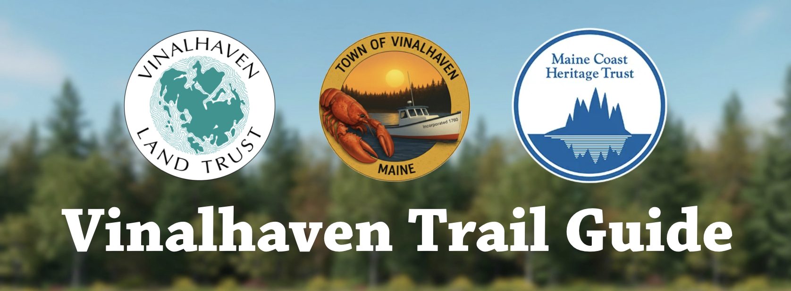
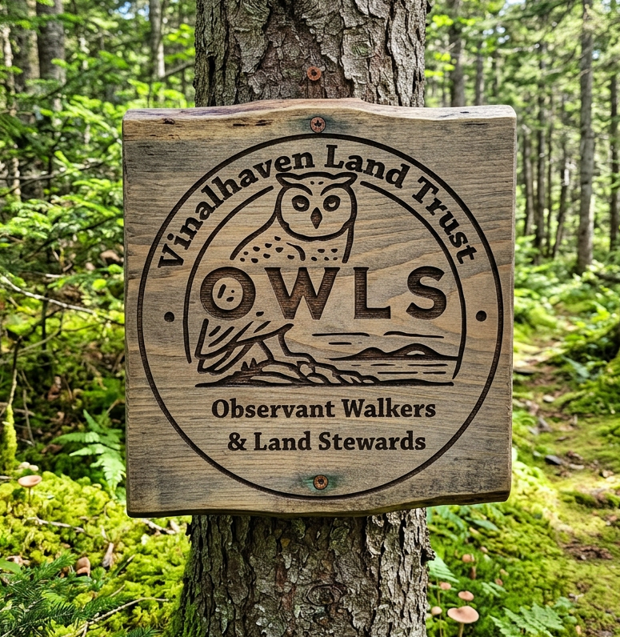

Loading map...
Flora & Fauna of
Vinalhaven
No species in this category yet.

Save every trail map, photo, and description to your phone so the whole app works even with no cell signal. Do this on Wi-Fi before you head out.
Checking saved maps…
Version —
Pick up to 3 trails you know best.
Gathering the Flock…

Do you love our trails so much that you want to help maintain them? The OWLS are a welcoming group that keeps our island's preserves clear, safe, and thriving. Here's the idea: Walk your favorite trails anytime, spot what needs attention, and report it. Then join us on volunteer workdays where we tackle the big stuff together: building trail features, cutting new trails, repairing erosion, and more!
No experience? No problem. We provide all tools and gear, pair newcomers with experienced trail crew, and even offer professional chainsaw safety training for those ready to grow their skills. Every hour you give safeguards the future of trails you love. You'll build real skills, make lasting friendships, and see the difference your work makes every time you walk through. Spread your wings and join the crew!
Loading…
Help us reach you and keep you safe on the trails.
Loading…
Loading…
Loading notes…
Tap your name to sign in
Loading…
Use your email and password or PIN
Add up to 3 photos of the same plant or animal — e.g. the whole plant, a close-up, and a leaf or stem.